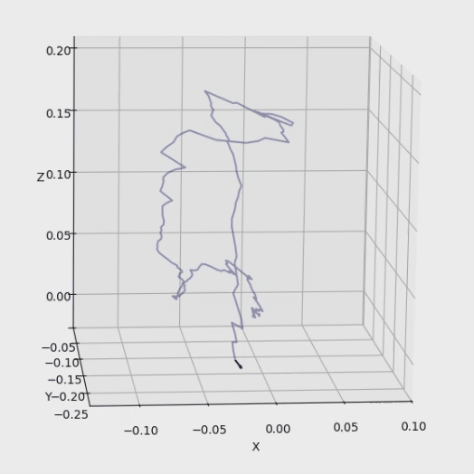
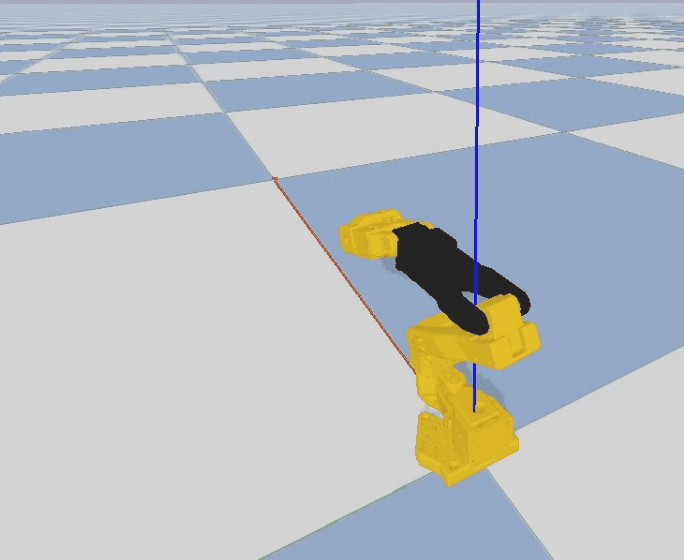

1
Data Acquisition Device and Overview

Problem:Most existing UMI methods are isomorphic between operator and collector. For regular users, the common setup is the SO101 arm, while isomorphic UMI grippers are too large for SO101 and cannot be directly adapted.
Project Contribution:We build a heterogeneous mapping pipeline so pose data collected from UMI can be accurately mapped and solved with inverse kinematics (IK) on SO101, enabling regular users to benefit from efficient UMI data collection.
Data captured by the UMI gripper and iPhone Pro is heterogeneously aligned and mapped into the SO101 robot arm motion chain.


Problem:Ego data is increasingly popular in embodied AI, but pure 2D ego videos are mainly suitable for pretraining front-end video models and make it difficult to obtain high-quality hand pose data.
Project Contribution:We integrate an Ego data acquisition pipeline with precise hand-pose mapping, and can also map and solve IK to SO101 with good accuracy, so regular users can also leverage trending Ego data workflows.
Hand videos from a chest-mounted iPhone Pro are processed with hand keypoint detection, then transformed through pose and coordinate computations to drive SO101.


